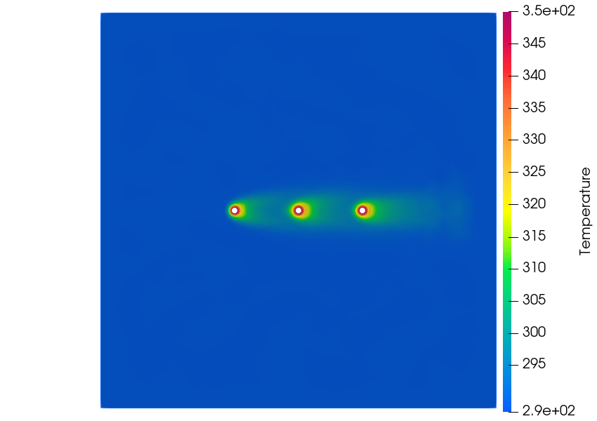
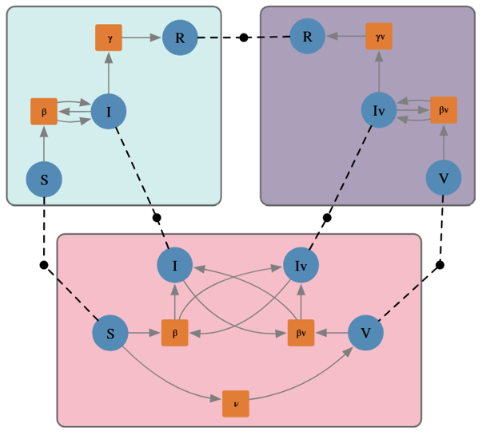

Portfolio
Below, I've included a list of projects in which I have made significant software contributions (or am the sole developer) along with a brief summary and links to relevant resources.
Note for Recruiters:
The table below only includes projects with a clear software product. Thus, work experience like HPC benchmarking, scripts generated for data processing, and auxiliary front-end development are not included. If you are interested in a comprehensive list, please contact me on LinkedIn for a copy of my CV.| Dates | Description | Skills |
|---|---|---|
| 11/2025 - 1/2026 | Unofficial Desmos CL Docs Website Documention-style website which consolidates helpful information from the CL Forums which is not present in the official Desmos CL documentation |
Desmos CL, Markdown, Python |
| 8/2025 - 1/2026 | Nested Argumentation Github [WORK IN PROGRESS] Interactive tool for generating diagrams of arguments ranging from informal argumentation to mathematical proof. |
React, Typescript, Zustand |
| 8/2024 - 5/2025 | Gendered Proof Language Developed software for performing natural language processing on a large corpus of mathematical papers. This software extended traditional qualitative language analysis methods using a combination of rules-based and LLM semantic disambiguation. |
Python, Bash, HPC |
| 5/2023 - 8/2023 | Caclulating Inter-Rater Reliability on Time Sequential Data ICME Proceedings Investigated the properties of different inter-rater reliability methods used in qualitative research |
Python |
| 8/2022 - 5/2024 | Scaffolding Strategies for Undergraduate Mathematics Modeling Developed software for statistical analysis and data visualization of qualitatively coded video data. The analysis and visualizations were used to investigate the relationship between student modeling and instructor scaffolding in the context of differential equations. |
Python, SKLearn, Pandas, R |
| 6/2020 - 5/2022 |  Decapodes Documentation Multiphysics simulation software designed with a high level of modularity, using concepts from applied category theory to make a tool which allows both rapid modeling as well as fine-tuned descriptions of dynamic systems. |
Julia, Simulation, Multiphysics |
| 6/2020 - 5/2022 |  AlgebraicPetri Documentation Library for generating Petri net models compositionally. This library facilitates rapid generation of complex epidemiological and biochemical models use model composition and pattern-based stratification. |
Julia, Simulation, Epidemiology |
| 6/2020 - 5/2022 |  AlgebraicRelations Github Library developed to provide an intuitive and elegant method for generating and querying scientific databases. |
Julia, PostgreSQL |
| 8/2019 - 4/2021 | Word Frequency Explorer Website developed for historical linguistic analyses. This website generated time-series plots of the frequency of user-provided words as they appeared in Congressional Serial Sets. |
Go, Solr, Plotly, HTML, CSS |
| 5/2018 - 8/2018 | Local Graphlet Prediction of Virality IEEE Publication Investigated the effect of local structure on virality processes in a networked system. |
Graph Analysis, Python, Bash |
| 5/2017 - 8/2017 |  Crosstalk: Silicon Photomultiplier Simulation Github Developed a simulation of the SiPM units used in the LHC CMS experiment in order to classify detector behavior. |
Simulation, Java |
| 5/2016 - 8/2016 | CMS QIE Database Github Developed a Django database to track QIE detector cards as they were tested at Fermilab, recieved at the LHC, and installed into the CMS experiment. |
Django, HTML, Python |
| 8/2014 - 8/2015 |  EMField Simulator Github Interactive tool for experimenting with and visualizing various aspects of electromagnetic fields. |
Java, Simulation |